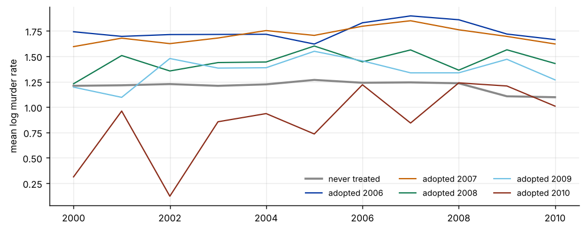
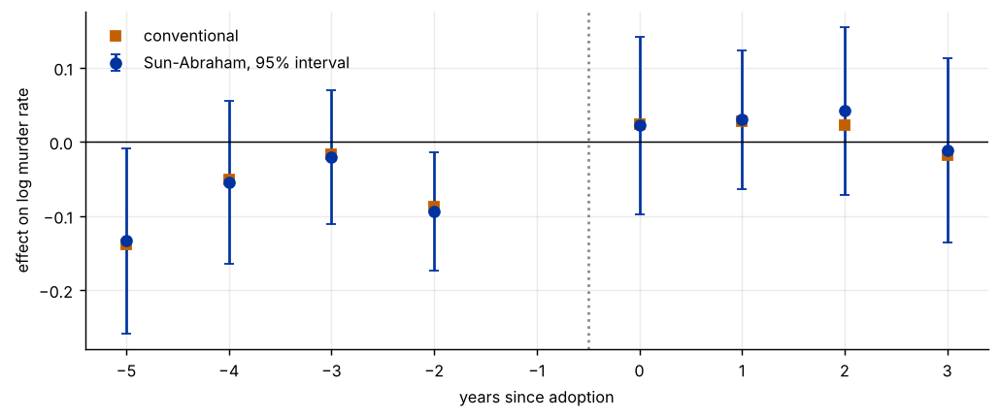
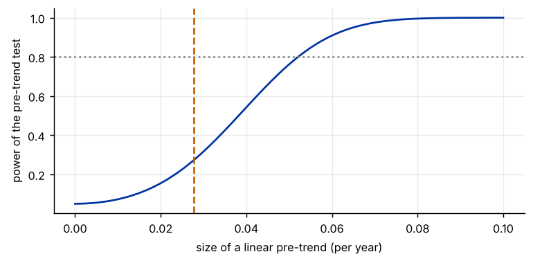

Step 1The question and the model
The staggered DiD guide estimates the average effect of castle doctrine laws. This guide looks at the path of the effect around adoption and at how much we can trust the "no pre-trend" claim. Our question is: does the murder rate in adopting states move differently from that in never-adopting states before adoption, and how does it change after adoption?
With adoption year \(g\) for each state and event time \(\ell=t-g\), the Sun–Abraham regression interacts cohort and event-time indicators, using never-treated states as controls and \(\ell=-1\) as the reference period:
where \(\hat w_{g|\ell}\) is the share of cohort \(g\) among the treated states observed at event time \(\ell\). The conventional alternative uses one coefficient per event time for all treated states together.
| Symbol | Variable in the file | Definition |
|---|---|---|
| \(y_{it}\) | l_murder |
log murder rate per 100,000 |
| \(D_{it}\) | castle_law |
1 if the state has a castle doctrine law in year \(t\) |
| \(g\) | adoption year (2006 to 2010); never-treated states have none | |
| \(\ell\) | years since adoption |
Before you estimate anything
Decide the window of event time to report (here −5 to 3), the reference period (−1) and the control group (never-treated states). Event times near the ends of the window are identified by few cohorts, so coefficients there are noisy and may describe different cohorts. State the weights, not only the plot.
How to write it: design
We estimate dynamic effects of castle doctrine laws with an event-study design. Adoption dates run from 2006 to 2010, and 29 states never adopt. We use the interaction-weighted estimator of Sun and Abraham (2021), with never-treated states as the control group and the year before adoption as the reference period. Standard errors come from a bootstrap that resamples states. We test pre-trends with a joint Wald test, evaluate its power, and bound the post-treatment effects under smoothness restrictions on possible violations of parallel trends.
Step 2Load the data and look at event time
import warnings; warnings.filterwarnings("ignore")
import numpy as np, pandas as pd
import matplotlib.pyplot as plt
from scipy import stats
from scipy.optimize import linprog
d = pd.read_csv("castle_murder.csv")
first = d[d.castle_law == 1].groupby("state").year.min()
d["g"] = d.state.map(first).fillna(0).astype(int) # 0 = never treated
d["l"] = np.where(d.g > 0, d.year - d.g, np.nan)
cohorts = sorted(d.g[d.g > 0].unique()); states = sorted(d.state.unique())
size = d[d.g > 0].groupby("g").state.nunique()
print(f"{len(states)} states, {d.year.min()}-{d.year.max()}; never treated: {d[d.g == 0].state.nunique()}")
print("Adopting states by cohort:", size.to_dict())
rng_l = {int(g): (int(d.year.min() - g), int(d.year.max() - g)) for g in cohorts}
print("Event times observed by cohort:", rng_l)
cover = pd.DataFrame({l: [int(size[g]) if rng_l[int(g)][0] <= l <= rng_l[int(g)][1] else 0 for g in cohorts] for l in range(-6, 5)}, index=cohorts)
print("\nNumber of treated states observed at each event time")
print(cover.to_string())
fig, ax = plt.subplots(figsize=(8, 3.2))
ax.plot(d[d.g == 0].groupby("year").l_murder.mean(), color="#888", lw=2, label="never treated")
for g, c in zip(cohorts, ["#0033a0", "#c46000", "#0f7a4f", "#6ec1e4", "#8a2a17"]):
ax.plot(d[d.g == g].groupby("year").l_murder.mean(), color=c, lw=1.2, label=f"adopted {g}")
ax.legend(frameon=False, ncol=3, fontsize=8); ax.set_ylabel("mean log murder rate"); plt.tight_layout()50 states, 2000-2010; never treated: 29
Adopting states by cohort: {2006: 1, 2007: 13, 2008: 4, 2009: 2, 2010: 1}
Event times observed by cohort: {2006: (-6, 4), 2007: (-7, 3), 2008: (-8, 2), 2009: (-9, 1), 2010: (-10, 0)}
Number of treated states observed at each event time
-6 -5 -4 -3 -2 -1 0 1 2 3 4
2006 1 1 1 1 1 1 1 1 1 1 1
2007 13 13 13 13 13 13 13 13 13 13 0
2008 4 4 4 4 4 4 4 4 4 0 0
2009 2 2 2 2 2 2 2 2 0 0 0
2010 1 1 1 1 1 1 1 0 0 0 0
How to read it
There are 50 states over 2000–2010, 29 never treated and 21 adopting between 2006 and 2010. The cohort of 2007 has 13 states, the others have 4, 2, 1 and 1. Because the panel ends in 2010, the later event times rest on the earliest cohorts: at event time 3 only the 2006 and 2007 cohorts are observed (14 states), and at event time 4 only a single state. We report −5 to 3. In the figure the mean murder rate of the 2007 cohort drifts up relative to the never-treated states before adoption, which the event study will quantify.
Step 3The conventional event-study regression
def dummies_fe(dd):
return pd.concat([pd.get_dummies(dd.state).astype(float), pd.get_dummies(dd.year, drop_first=True).astype(float)], axis=1)
def twfe_es(dd, lo=-5, hi=3):
lc = dd.l.clip(lo, hi) # bin the end points
ev = [l for l in range(lo, hi + 1) if l != -1]
X = pd.concat([dummies_fe(dd)] + [pd.Series(((dd.g > 0) & (lc == l)).astype(float), name=l) for l in ev], axis=1)
b = np.linalg.lstsq(X.values, dd.l_murder.values, rcond=None)[0]
return pd.Series(b[-len(ev):], index=ev)
b_tw = twfe_es(d)
print("Conventional event study (end points binned at -5 and 3), reference period l = -1")
print(b_tw.round(3).to_string())Conventional event study (end points binned at -5 and 3), reference period l = -1 -5 -0.139 -4 -0.051 -3 -0.017 -2 -0.087 0 0.024 1 0.028 2 0.022 3 -0.018
How to read it
The conventional event-study regression, with end points binned at −5 and 3, gives lead coefficients of −0.14 at five years before adoption, −0.05, −0.02 and −0.09 at two years before, and lag coefficients of 0.02 to 0.03 at event times 0 to 2 and −0.02 at event time 3. The leads are mostly negative: treated states had lower murder rates than at l = −1 earlier on, so their murder rates were rising relative to controls before the laws.
Step 4The interaction-weighted estimator of Sun and Abraham
def sa_es(dd, window=range(-5, 4)):
names, cols = [], [dummies_fe(dd)]
for g in cohorts:
for l in range(dd.year.min() - g, dd.year.max() - g + 1):
if l == -1: continue
cols.append(pd.Series(((dd.g == g) & (dd.l == l)).astype(float), name=(g, l))); names.append((g, l))
X = pd.concat(cols, axis=1)
b = pd.Series(np.linalg.lstsq(X.values, dd.l_murder.values, rcond=None)[0][-len(names):], index=pd.MultiIndex.from_tuples(names))
n = dd[dd.g > 0].groupby("g").state.nunique(); out = {}
for l in window:
if l == -1: continue
gs = [g for g in cohorts if (g, l) in b.index and n.get(g, 0) > 0]
wt = np.array([n[g] for g in gs], float); wt /= wt.sum()
out[l] = sum(w_ * b[(g, l)] for w_, g in zip(wt, gs))
return pd.Series(out)
b_sa = sa_es(d)
rng = np.random.default_rng(3); R = 300; draws = []
st_arr = np.array(states)
for _ in range(R): # bootstrap: resample whole states
pick = rng.choice(st_arr, len(st_arr)); parts = []
for k, s_ in enumerate(pick):
x = d[d.state == s_].copy(); x["state"] = k; parts.append(x)
draws.append(sa_es(pd.concat(parts, ignore_index=True)))
draws = pd.DataFrame(draws); se_sa = draws.std()
tab = pd.DataFrame({"conventional": b_tw, "Sun-Abraham": b_sa, "boot s.e.": se_sa, "t": b_sa / se_sa,
"cohorts at l": [int(sum(cover.loc[g, l] > 0 for g in cohorts)) for l in b_sa.index]})
print(tab.round(3).to_string())
fig, ax = plt.subplots(figsize=(8, 3.4))
ls = list(b_sa.index)
ax.errorbar(ls, b_sa.values, yerr=1.96 * se_sa.values, fmt="o", color="#0033a0", capsize=3, label="Sun-Abraham, 95% interval")
ax.plot(ls, b_tw.reindex(ls).values, "s", color="#c46000", ms=5, label="conventional")
ax.axhline(0, color="#000", lw=.8); ax.axvline(-.5, color="#888", ls=":"); ax.set_xlabel("years since adoption"); ax.set_ylabel("effect on log murder rate")
ax.legend(frameon=False); plt.tight_layout()conventional Sun-Abraham boot s.e. t cohorts at l -5 -0.139 -0.134 0.064 -2.094 5 -4 -0.051 -0.055 0.056 -0.969 5 -3 -0.017 -0.020 0.046 -0.435 5 -2 -0.087 -0.094 0.041 -2.303 5 0 0.024 0.022 0.061 0.360 5 1 0.028 0.030 0.048 0.626 4 2 0.022 0.042 0.058 0.720 3 3 -0.018 -0.012 0.063 -0.184 2

How to read it
The Sun–Abraham estimates are very close to the conventional ones (−0.134, −0.055, −0.020 and −0.094 for the leads; 0.022, 0.030, 0.042 and −0.012 for the lags), because the effects are small and the never-treated states form most of the comparison group. The difference is largest at event time 2 (0.042 against 0.022). Bootstrap standard errors are 0.04 to 0.06. Two of the four leads are individually significant (l = −5: t = −2.1, and l = −2: t = −2.3), and none of the lags is (|t| ≤ 0.7). The number of cohorts behind each point falls from five to two at l = 3, so the later lags describe fewer states.
Step 5Test the pre-trends and ask how much power the test has
pre = [l for l in b_sa.index if l < -1]; post = [l for l in b_sa.index if l >= 0]
bp = b_sa[pre].values; Sp = np.cov(draws[pre].values.T)
wald = bp @ np.linalg.solve(Sp, bp); p_w = stats.chi2.sf(wald, len(pre))
print(f"Joint test that the {len(pre)} pre-treatment coefficients are zero: Wald = {wald:.2f}, p = {p_w:.4f}")
print("Average pre-treatment coefficient:", round(float(bp.mean()), 3))
# power against a linear pre-trend: delta_l = slope * (l + 1)
tau = np.array([l + 1 for l in pre], float) # -4, -3, -2, -1 for l = -5 ... -2
ncp_unit = tau @ np.linalg.solve(Sp, tau)
crit = stats.chi2.ppf(.95, len(pre))
slopes = np.linspace(0, .1, 401)
power = 1 - stats.ncx2.cdf(crit, len(pre), slopes ** 2 * ncp_unit)
s80 = slopes[np.argmax(power >= .8)]
print(f"\nSlope with 80% power in this test: {s80:.3f} per year; it would add {s80 * 1:.3f} at l = 0 and {s80 * 4:.3f} at l = 3 to the post coefficients")
slope_est = (tau @ bp) / (tau @ tau)
print(f"Least-squares slope of the estimated pre-coefficients: {slope_est:.3f} per year")
print("Estimated post coefficients:", dict(zip(post, b_sa[post].round(3))))
fig, ax = plt.subplots(figsize=(6, 3)); ax.plot(slopes, power, color="#0033a0"); ax.axhline(.8, color="#888", ls=":"); ax.axvline(abs(slope_est), color="#c46000", ls="--")
ax.set_xlabel("size of a linear pre-trend (per year)"); ax.set_ylabel("power of the pre-trend test"); plt.tight_layout()Joint test that the 4 pre-treatment coefficients are zero: Wald = 11.35, p = 0.0229
Average pre-treatment coefficient: -0.076
Slope with 80% power in this test: 0.052 per year; it would add 0.052 at l = 0 and 0.209 at l = 3 to the post coefficients
Least-squares slope of the estimated pre-coefficients: 0.028 per year
Estimated post coefficients: {0: 0.022, 1: 0.03, 2: 0.042, 3: -0.012}
How to read it
The joint test of the four pre-treatment coefficients rejects zero: Wald = 11.35, p = 0.023. Parallel pre-trends are not supported. A linear trend fitted to the pre-coefficients has a slope of 0.028 per year. The power curve shows how large a linear trend the test would have caught: with 80% power it detects a slope of 0.052 per year, and a trend of that size would add 0.05 to the coefficient at l = 0 and 0.21 at l = 3. The pre-test is therefore not powerful against trends that are small in the pre-period but would be as large as the effects we are looking for in the post-period.
Step 6How sensitive is the effect to a violation of parallel trends?
Ls = list(range(-5, 4)) # pre -5..-2, reference -1, post 0..3
idx = {l: i for i, l in enumerate(Ls)}
sec = lambda b: np.array([b[idx[l + 1]] - 2 * b[idx[l]] + b[idx[l - 1]] for l in Ls[1:-1]])
b_pre_full = np.array([b_sa[l] if l != -1 else 0.0 for l in Ls[:5]])
M_hat = np.abs(np.diff(b_pre_full, 2)).max()
print(f"Largest second difference of the estimated pre-coefficients (incl. the reference period): {M_hat:.3f}")
def bounds(k, M):
n = len(Ls); c = np.zeros(n); c[idx[k]] = 1
box = [(None, None)] * n
for l in Ls[:5]: # pre-period bias within the 95% interval of the estimate; 0 at l = -1
box[idx[l]] = (0.0, 0.0) if l == -1 else (b_sa[l] - 1.96 * se_sa[l], b_sa[l] + 1.96 * se_sa[l])
A_ub = []; b_ub = []
for l in Ls[1:-1]: # second differences of the bias are at most M in size
row = np.zeros(n); row[idx[l + 1]] += 1; row[idx[l]] -= 2; row[idx[l - 1]] += 1
A_ub += [row, -row]; b_ub += [M, M]
lo = linprog(c, A_ub=A_ub, b_ub=b_ub, bounds=box).fun
hi = -linprog(-c, A_ub=A_ub, b_ub=b_ub, bounds=box).fun
return lo, hi
rows = []
for mult in [0, .5, 1, 2]:
M = mult * M_hat
for k in [0, 1, 2]:
blo, bhi = bounds(k, M)
lo_set, hi_set = b_sa[k] - bhi, b_sa[k] - blo # identified set for the effect at event time k
rows.append((mult, k, b_sa[k], lo_set, hi_set, lo_set - 1.96 * se_sa[k], hi_set + 1.96 * se_sa[k]))
out = pd.DataFrame(rows, columns=["M / M_hat", "event time", "estimate", "set low", "set high", "CI low", "CI high"])
out["excludes 0"] = (out["CI low"] > 0) | (out["CI high"] < 0)
print(out.round(3).to_string(index=False))Largest second difference of the estimated pre-coefficients (incl. the reference period): 0.167
M / M_hat event time estimate set low set high CI low CI high excludes 0
0.0 0 0.022 -0.033 0.008 -0.153 0.128 False
0.0 1 0.030 -0.080 0.002 -0.174 0.096 False
0.0 2 0.042 -0.123 -0.000 -0.236 0.113 False
0.5 0 0.022 -0.159 0.092 -0.278 0.211 False
0.5 1 0.030 -0.415 0.253 -0.509 0.347 False
0.5 2 0.042 -0.752 0.502 -0.865 0.615 False
1.0 0 0.022 -0.284 0.175 -0.404 0.295 False
1.0 1 0.030 -0.750 0.504 -0.844 0.598 False
1.0 2 0.042 -1.380 1.005 -1.493 1.118 False
2.0 0 0.022 -0.487 0.343 -0.606 0.463 False
2.0 1 0.030 -1.322 1.007 -1.416 1.101 False
2.0 2 0.042 -2.489 2.010 -2.602 2.123 FalseHow to read it
Smoothness restrictions bound how much the violation can change from one period to the next. With M = 0 the violation is a linear trend, and the bound on the effect is −0.033 to 0.008 at l = 0, −0.080 to 0.002 at l = 1 and −0.123 to 0.000 at l = 2, so extrapolating the pre-trend takes the estimated effect to zero or below. Allowing the slope of the violation to change, with M equal to half of the largest second difference seen before treatment (0.167), widens the sets a lot, to −0.16 to 0.09 at l = 0 and −0.75 to 0.50 at l = 2. None of the 95% intervals excludes zero for any M, including M = 0. The sets are wide because the pre-coefficients are noisy (each has a standard error of 0.04 to 0.06) and the violation can build up over several periods. The sensitivity analysis cannot give a positive or negative effect: it shows that the data are compatible with no effect at all. The approximation (identified set widened by 1.96 standard errors, with the pre-period box taken from the 95% intervals) is conservative.
How to write it: results
The event study shows no significant effect of castle doctrine laws on the murder rate after adoption: the Sun–Abraham estimates are 0.022, 0.030, 0.042 and −0.012 at event times 0 to 3 (bootstrap standard errors 0.05 to 0.06). The conventional event-study regression gives nearly the same numbers. However, pre-trends are not parallel (joint Wald test p = 0.023): murder rates in adopting states rose relative to never-treated states before adoption. The pre-trend test has 80% power only against a linear trend of 0.052 per year, which would add 0.05 to 0.21 to the post-treatment coefficients. If the pre-trend is extrapolated linearly, the post-treatment effects are between −0.12 and 0.01. We conclude that these data cannot distinguish a small effect of the laws from the continuation of a pre-existing trend.
Step 7What to report in the paper
| Item | What to show |
|---|---|
| Estimator | Sun–Abraham (or Callaway–Sant'Anna), the control group, the reference period and the window |
| Coverage | which cohorts contribute at each event time |
| Inference | the bootstrap or clustering method, with states or units as the resampling unit |
| Pre-trends | the joint test and its power, not only "the leads are insignificant" |
| Sensitivity | how large a violation of parallel trends the result can tolerate (smoothness or relative-magnitude bounds) |
| Comparison | the conventional event study next to the robust one |
Common mistakes
- Treating insignificant leads as proof of parallel trends. The pre-test can have low power, and passing it does not remove bias (Roth 2022).
- Using a single set of leads and lags under staggered adoption. With heterogeneous effects the coefficients can mix cohorts and even pick up other periods' effects. Use an interaction-weighted or imputation estimator.
- Binning or dropping end points without saying so. End points rest on few cohorts and states.
- Plotting only the point estimates. Show intervals from a bootstrap or clustered errors that account for the correlation between event times.
- Normalising to a noisy reference period. The whole picture shifts with the reference. Report how the result changes with another choice.
- Ignoring sensitivity. A small post effect next to a clear pre-trend can come from the trend. Report the bounds.